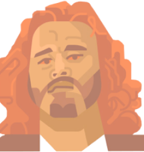
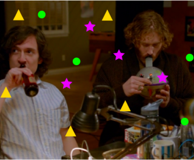
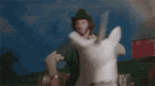

Особен
ности
Чудаковатый травокур остап бендер из силиконовой долины. Вспыльчив и эмоционален. Согласно легенде: нравится девушкам. Ужасный и нормальный друг одновременно. Авантюрист. Специалист по нестандартным способам придумывания нейминга.Кстати, про способы создания нейминга.
Как все знаю, в долине принято употреблять ЛСД для того, чтобы найти вдохновения для придумывание чего угодно. Так, Эрлих придумал название Авиато. А еще именно он выявил главный принцип хорошего названия компании: «название должно быть первобытным, таким чтобы его хотелось кричать во время секса».
У Эрлиха особый подход к работе. Главный прницип — на работе не работать, а отдыхать. Именно поэтому для в порядке вещей посреди проекта покурить травы и дальше заниматься проектом. Возможно, именно поэтому он успевает вести много проектов одновременно и при этом не устает.

Дости
жения
Создал приложение для поиска авиабилетов Aviato. Это его единственная успешная самостоятельная работа.
Причастен также к стартапу Pied Piper так как по условиям созданного им инкубатора, 10% от созданных в нём стартапов, принадлежит Эрлиху.
После того как стартап взлетел, Эрлих продал долю своих акций и стал триллионером галалктики. Вырученные деньги он потратил на создание межгаллактической фермы альпак и единорогов.
